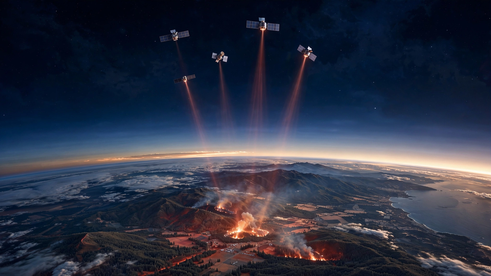

FireSat Can Spot a 25-Square-Meter Brush Fire From Orbit. GOES Needs It to Reach 4 Million.
Three satellites launched from Vandenberg on July 7 carry infrared sensors that resolve wildfires at 5-meter pixels, a 160,000-fold improvement in minimum detectable fire area over the geostationary system guarding the Western Hemisphere. Cross-referencing fire-growth physics with detection thresholds reveals how much each minute of earlier detection is worth.

Twenty-five square meters. That is the minimum fire area detectable by the three operational FireSat satellites that rode SpaceX's Transporter-17 rideshare from Vandenberg Space Force Base on July 7. Built by Muon Space for the Earth Fire Alliance nonprofit, each carries a six-channel multispectral infrared payload tuned to see through smoke and darkness, resolving thermal signatures down to 5-meter pixels, the footprint of a single-car garage.
Before these spacecraft existed, the fastest wildfire-detection system watching the continental United States was GOES-West, a geostationary satellite that refreshes every five minutes but cannot reliably distinguish a real fire from sensor noise until the blaze fills a substantial fraction of a 2-kilometer pixel: approximately 4 million square meters, or about 100 acres of flame. The ratio between those two thresholds is 160,000 to 1.
How Fires Grow When Nobody Watches
Wildfire-growth dynamics follow a power-law relationship published in Scientific Reports where burned area scales approximately as t², each burning cell igniting neighbors in an accelerating chain reaction that a Geophysical Research Letters study by Columbia and UC Santa Barbara confirmed drives the nonlinear relationship between aridity and burned area. Because area scales as the square of time, a fire detected at minute 5 is not five times harder to suppress than one caught at minute 1; it is twenty-five times larger. Under moderate grassland conditions with 15-km/h winds, a head fire advances 50 to 80 meters per minute. An ignition reaches 25 square meters, one garage, in under 10 seconds. It crosses one hectare, about two football fields, within 8 minutes. Reaching 4 million square meters where GOES can confidently flag it above a 60-to-80-percent false-alarm rate takes 40 to 60 minutes of unimpeded spread.
Every minute in that window costs real money.
Each Minute of Detection Delay: ~$60,000
A fire detectable by FireSat at minute 1 but invisible to GOES until minute 45 has grown about 2,000 times larger before the legacy system flags it. U.S. Forest Service data show suppression costs ranging from $200 to $3,000 per acre depending on terrain, with crown fires in steep country averaging $1,300 to $2,100 per acre.
Arizona's Schultz Fire burned 15,000 acres and generated $59 million in direct suppression, but surrounding property depreciation added $60 million and post-fire flooding tacked on another $8 million, pushing the total past $133 million for a fire whose spread could have been limited by $15 million in preventive thinning.
At national scale, the January 2025 Palisades and Eaton fires generated $28 billion to $35 billion in insured losses alone per Verisk, with LAEDC estimating total economic damage including property depreciation, job losses, and projected GDP impact at up to $54 billion. Federal suppression has averaged $3.1 billion per year over the past decade, while total wildfire economic damage routinely exceeds $20 billion annually across some 70,000 fires.
Run the calculation. About 3,500 fires per year escape initial containment and drive 95 percent of total damage. If 20 minutes of earlier satellite detection prevents 15 percent from escalating, using average combined costs of $6 million per escaped fire, avoided damage totals roughly $3.15 billion annually. Across 3,500 fires, each minute of earlier detection is worth approximately $45,000 to $60,000 in expected avoided damage nationwide.
Satellite Detection, in One Table
| System | Resolution | Min. Detectable | Revisit | Status |
|---|---|---|---|---|
| GOES-16/17/18 | 2 km | ~4,000,000 m² (~100 acres) | 5 min | Operational |
| VIIRS (NOAA-20/21) | 375 m | ~140,000 m² (~35 acres) | 2–4x daily | Operational |
| MODIS (Terra/Aqua) | 1 km | ~1,000,000 m² (~250 acres) | 2x daily | Aging |
| FireSat (3 sats) | 5 m | 25 m² (1 garage) | 2x daily | Launched Jul 7 |
| FireSat (50 sats) | 5 m | 25 m² (1 garage) | 20 min | Target 2029 |
| OroraTech | ~200 m | ~40,000 m² (~10 acres) | Hours | 8 of 100 CubeSats |
| WildFireSat (Canada) | 200 m | ~40,000 m² (~10 acres) | Daily | Planned 2029 |
Fire detection from space has always forced a tradeoff with no middle ground: spatial resolution or temporal resolution. GOES watches the Western Hemisphere every five minutes but cannot see a fire until it covers 100 acres. VIIRS resolves fires 28 times smaller but passes only a few times daily, so a 2 AM ignition burns for hours unnoticed. Landsat-8 and Sentinel-2 offer 30-meter and 10-meter resolution, but 8-day and 5-day revisit rates render them post-fire analysis tools.
FireSat at full constellation is designed to break that tradeoff entirely. Fifty satellites in low-Earth orbit would deliver 5-meter resolution every 20 minutes, with onboard AI comparing each patch against the previous thousand images of that location, giving fire agencies both the sharpness to see a campfire-sized ignition and the cadence to catch it before the first engine arrives.
Already Validated
During its March 2025 protoflight mission, a single FireSat spacecraft detected a small brush fire in rural Oregon that GOES, VIIRS, and every other operational satellite had missed entirely, the fire burning below every existing system's detection floor. Ground crews dispatched to the coordinates confirmed active flames. One detection from one prototype does not constitute a track record, but it demonstrated something no prior satellite had proved: fires exist and persist in a size range that was simply invisible from space until this sensor flew.
Earth Fire Alliance's nonprofit structure also matters. Founded with $13 million from Google.org and the Gordon and Betty Moore Foundation, the organization provides all fire-detection data free to agencies worldwide, with no subscription tier, no premium access level, and no revenue model that depends on fires continuing to burn. Cal Fire, Colorado agencies, and national services in Australia and Portugal are already integrating alerts into their dispatch workflows, at a marginal cost that compares strikingly with commercial high-resolution satellite tasking at $10,000 to $25,000 per single image.
Limitations and Strongest Counterargument
Three satellites are not a constellation, and the current revisit rate matches VIIRS at roughly twice daily. Until 50 spacecraft reach orbit around 2029, FireSat adds resolution without temporal coverage, meaning a fire igniting between passes still burns for hours unobserved. Heavy cloud cover degrades infrared performance despite claims of all-weather capability; smoke penetration is validated, but dense-cloud penetration awaits independent testing across a full fire season. At 5-meter resolution, false positives from industrial facilities, urban heat islands, and agricultural burns also become a concern that GOES's coarse pixels simply average away; how fire agencies will filter those alerts at scale remains an open operational question.
The strongest counterargument, though, comes from the ground. California's ALERTCalifornia network of 1,211 AI cameras detected 636 wildfires before anyone called 911 in 2024, providing continuous monitoring with sub-minute latency across its coverage area. For the wildland-urban interface where the costliest fires burn, a $50,000 mountaintop camera may outperform a satellite for years to come. FireSat's decisive edge lies in global reach: remote wilderness, developing nations, and the vast stretches of fire-prone land where camera infrastructure does not exist and probably never will.
What You Can Do
If you run a fire agency, register for FireSat data through Earth Fire Alliance now, because even at twice-daily revisit, catching fires between VIIRS passes justifies the integration effort, and layering satellite alerts alongside ground cameras creates complementary failure coverage that neither system provides alone.
For anyone modeling wildfire risk in insurance or climate finance: the tail-risk distribution of every catastrophe model built before July 7, 2026 assumed detection infrastructure that no longer represents the state of the art, and a full constellation would restructure those curves in ways worth pricing now rather than after the first billion-dollar save.
And for the rest of us: Earth Fire Alliance is a nonprofit whose roadmap from 3 to 50 satellites depends entirely on continued philanthropic and government funding. An entire constellation would cost less than a single escaped Western U.S. wildfire. Federal suppression spending hit $3.1 billion last year; the federal budget for purpose-built fire-detection satellites was zero.
Bottom Line
On July 7, three satellites separated from a SpaceX rocket and began scanning Earth in six infrared wavelengths, resolving thermal signatures five orders of magnitude smaller than what any previous operational system could detect. Whether that capability transforms fire management depends on 47 more spacecraft reaching orbit. At a few hundred million dollars for the full constellation, the entire program costs less than what American wildfires extract from the economy in a single week.